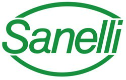

La boucherie Jambonus possède 2 partenariats qui lui sont vitals et qui nous permettent de vous offrir un service de qualité: Nos fournisseurs de Rungis nous offrent les meilleur produits qu'ils soient adaptés à vos besoins. Des viandes venuent de toutes l'Europe pour goûter à toutes leurs saveurs. Notre second partenariat se fais avec Sanelli. Ces couteaux El caliente permettent un découpage en bonne et due forme des viandes sans abîmer leur qualité et leur goût.
